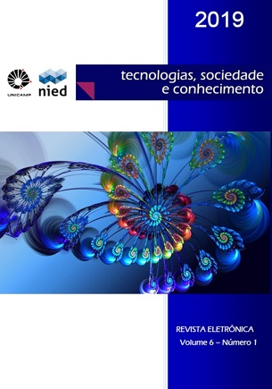

- Home
- >
- Publicações
- MoleculAR
Unicamp
MoleculAR
O MolerculAR foi um projeto de desenvolvimento feito como trabalho de conclusão de curso(TCC), que tem como principal objetivo a integração da tecnologia com a educação, entrelaçando a matéria de Química Molecular com a Realidade Aumentada(RA). O artigo foi publicado na revista eletrônica: tecnologias, sociedade e conhecimento v.6 n.1 de (2019)